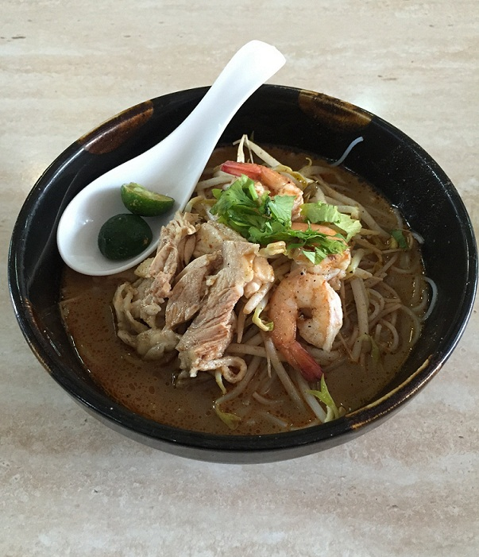

Sarawak Style Laksa

Laksa from Malaysia
Closely related to other laksa varieties, Sarawak laksa is characterized by a subtle, mild flavor
Consisting of a flavorful chicken or shrimp-based broth that is seasoned with thick laksa paste, which sometimes
includes more
than twenty different ingredients, the soup is accompanied by vermicelli noodles, shredded omelet, cooked
prawns, and shredded chicken.
Ingredients:
- Chicken breast with bone
- Prawns with shells
- Beansprout
- Eggs
- Sarawak Laksa Paste
- Coconut Milk
- Meehon
- Limes
- Water
Directions:
- Boil water in a pot.
Place chicken meat in boiling water for 30 minutes or until fully cooked. Set aside chicken meat to
cool.
Place prawns into same boiling water for 5 minutes or until cooked. Set aside prawns to cool.
Pour Sarawak laksa paste into the same boiling water and let it simmer for 30-45 minutes.
- Shred the chicken meat and peel prawns while waiting for laksa broth to simmer.
Then, beat eggs in a bowl and fry into thin sheets in a hot skillet. When egg is cooled, slice into thin
strips.
Use boiling water, scald the beansprouts for 3 minutes and remove from water.
Repeat step 7 for rice vermicelli. Repeat steps if necessary for large amount of rice vermicelli &
beansprout.
- Remove excess oil from laksa broth by using an oil sieve.
Then, add coconut milk (or evaporated milk) into Sarawak laksa soup base and let simmer for another 10
minutes under low heat.
Add salt or seasoning to taste.
Click for more recipes.